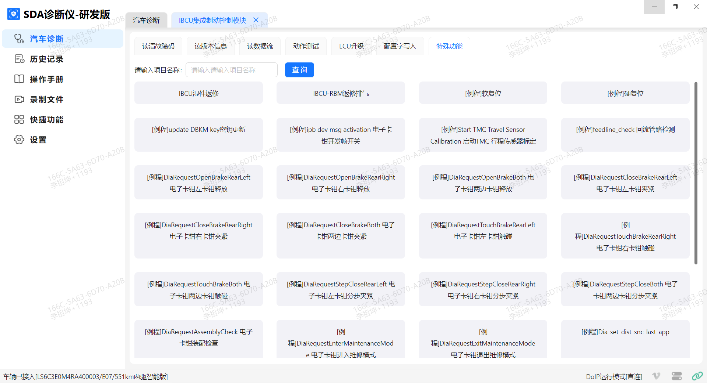
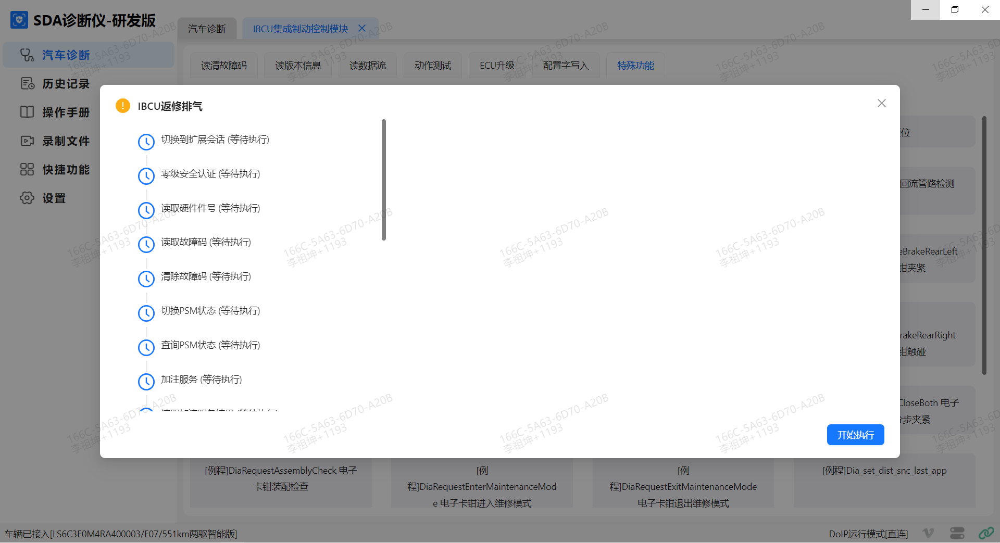
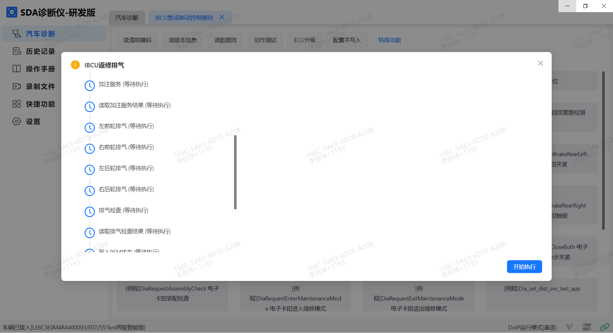
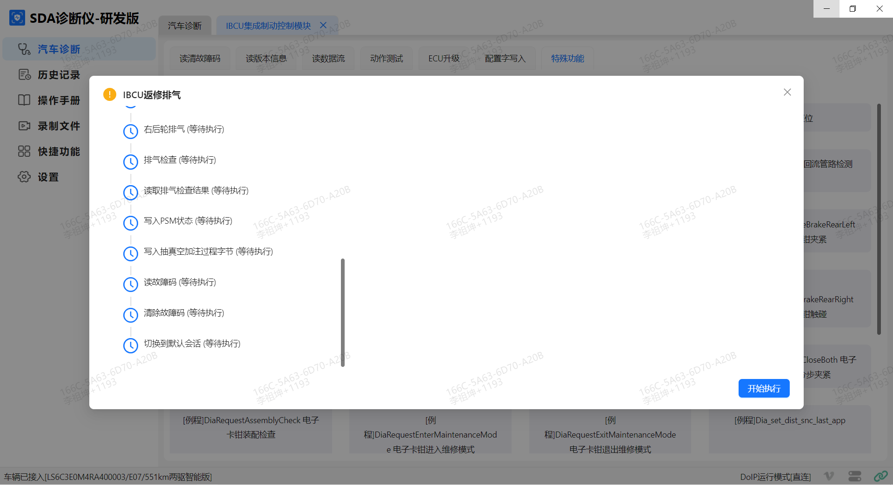

Тормозная жидкость содержит простой эфир полиэтиленгликоля и полиэтиленгликоль, избегать контакта с глазами и кожей.
При попадании тормозной жидкости в глаза промывать их холодной водопроводной водой в течение 15 min. Если боль не проходит, следует срочно обратиться к врачу.
При попадании на кожу тщательно промыть.
При случайном проглатывании выпить воды, вызвать рвоту и немедленно доставить пострадавшего в больницу.
Использовать защитные очки.
При попадании тормозной жидкости на лакокрасочное покрытие немедленно промыть чистой водой.
Убедиться, что автомобиль припаркован на ровной поверхности.
Выполнить удаление воздуха в следующем порядке: левое заднее, левое переднее, правое переднее и правое заднее.
Во время удаления воздуха в бачок тормозной жидкости необходимо доливать новую чистую тормозную жидкость, следя за тем, чтобы уровень тормозной жидкости поддерживался чуть выше середины между отметками шкалы.
Болт для выпуска воздуха должен находиться в полностью открытом состоянии до окончания удаления воздуха из отдельного колеса, только после этого его можно затягивать.
Использовать операцию "Заполнение и удаление воздуха IBCU" Диагностический прибор для управления работой насоса и клапанов в интегрированном модуле управления тормозной системой с целью удаления воздуха из вспомогательных масляных магистралей. Интегрированный модуль управления тормозной системой имеет два набора различных гидравлических контуров, направление потока гидравлической жидкости в которых различается при включении и выключении питания автомобиля. Программа "Заполнение и удаление воздуха IBCU" гарантирует, что оба контура и внутренняя полость корпуса клапанов будут заполнены тормозной жидкостью.
Пример пошагового удаления воздуха из автомобиля
Открыть крышку узел бачка тормозной жидкости, положить ветошь под бачок тормозной жидкости во избежание попадания тормозной жидкости на другие Компонент.
Подсоединить открытый конец прозрачной трубки для удаления воздуха к штуцеру выпуска воздуха левого заднего колесного цилиндра, подсоединить открытый конец прозрачной трубки для удаления воздуха к штуцеру выпуска воздуха левого заднего колесного цилиндра, погрузить другой конец трубки для удаления воздуха в тормозную жидкость в прозрачной емкости для удаления воздуха.
Поместить емкость для удаления воздуха на высоту по меньшей мере на 300 mm ниже штуцера выпуска воздуха для поддержания давления в гидравлической системе и предотвращения попадания воздуха в магистраль через резьбу штуцера.
Выполнить Подъем автомобиля. Ссылка Подъем
Включить Питание автомобиля, подключить диагностический прибор через порт OBD, установить связь с интегрированным модулем управления тормозной системой с помощью диагностического прибора, нажать: Диагностический прибор → Диагностика автомобиля → Интегрированный модуль управления тормозной системой IBCU → Специальные функции → Заполнение и удаление воздуха IBCU.

После входа в программу "Заполнение и удаление воздуха IBCU" нажимать "Начать выполнение" или "Далее" в соответствии с подсказками диагностического прибора.
Процедура выглядит следующим образом:
(1) Переключиться в режим расширенной сессии
(2) Аутентификация безопасности нулевого уровня
(3) Считывание номера детали оборудования
(4) Считывание кодов неисправностей
(5) Очистка кодов неисправностей
(6) Переключение состояния PSM
(7) Запрос состояния PSM
(8) Сервисная функция удаления воздуха IBCU
(9) Считывание результата сервисной функции удаления воздуха IBCU
(10) Удаление воздуха из контура переднего левого колеса
(11) Удаление воздуха из контура переднего правого колеса
(12) Удаление воздуха из контура заднего левого колеса
(13) Удаление воздуха из контура заднего правого колеса
(14) Проверка удаления воздуха
(15) Считывание результата проверки удаления воздуха
(16) Запись состояния PSM
(17) Запись результата заправки
(18) Очистка кодов неисправностей
(19) Считывание кодов неисправностей
(20) Переключение в сеанс по умолчанию



После завершения переключения состояния PSM модуль IBCU перейдет в состояние без усиления.
При выполнении сервисной функции удаления воздуха IBCU интегрированный модуль управления тормозной системой выполняет операцию удаления воздуха автоматически, при этом можно услышать звук сброса давления воздуха внутри IBCU, что является нормальным явлением; выполнять действия по шагам. Внимание: в процессе выполнения категорически запрещается нажимать на педаль тормоза.
Считать результат сервисной функции удаления воздуха IBCU: если диагностический прибор отображает успех, удаление воздуха завершено; если неуспешно, необходимо подождать 5 min и повторить процедуру удаления воздуха с помощью командной инструкции.
В качестве примера удаления воздуха из контура переднего левого колеса: открыть штуцер выпуска воздуха левого заднего колеса, причем степень открытия штуцера должна быть максимально возможной, плавно нажать педаль до упора, затем плавно и полностью отпустить педаль тормоза (если при нажатии возникает сопротивление, не следует давить с усилием); в процессе нажатия педали доливать тормозную жидкость; после завершения отображения на диагностическом приборе продолжать нажимать педаль в течение 1 min, визуально через прозрачную трубку контролировать тормозную жидкость до исчезновения пузырьков воздуха в трубке, затем удерживать педаль нажатой, затянуть штуцер выпуска воздуха левого заднего колеса и отпустить педаль, отсоединить прозрачную трубку — удаление воздуха для левого заднего колеса завершено. (Способы удаления воздуха для переднего левого, переднего правого и заднего правого колес аналогичны левому заднему колесу); действовать в соответствии с указаниями диагностического прибора для завершения операции удаления воздуха по четырем колесным цилиндрам интегрированного модуля управления тормозной системой.
При выполнении сервисной функции проверки удаления воздуха интегрированный модуль управления тормозной системой выполняет проверку удаления воздуха автоматически, при этом можно услышать рабочий шум IBCU, что является нормальным явлением; выполнять действия по шагам. Внимание: в процессе выполнения категорически запрещается нажимать на педаль тормоза.
Считать результат проверки удаления воздуха, проверить соответствие содержания воздуха норме; если не соответствует, требуется повторное удаление воздуха.
На шагах 18 и 19 выполнить очистку кодов неисправностей и считывание кодов неисправностей; при отсутствии каких-либо кодов неисправностей выполнять действия нормально по шагам. При наличии таких кодов неисправностей, как "Утечка в жестком тормозном трубопроводе", "Слишком много воздуха в тормозных магистралях" и т. д., необходимо проверить тормозные магистрали на наличие утечек, а затем повторно выполнить шаги с 10 по 20.
Опустить автомобиль, удаление воздуха завершено.